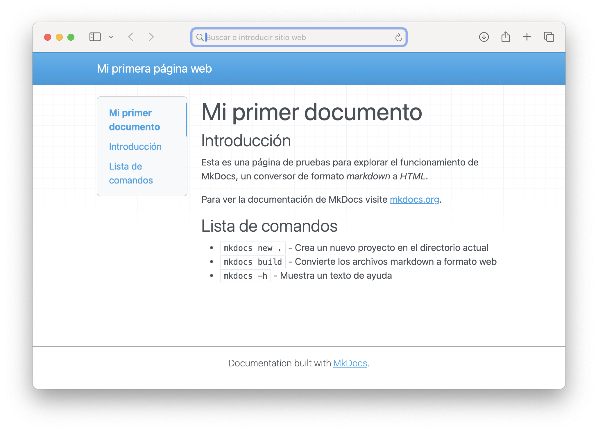
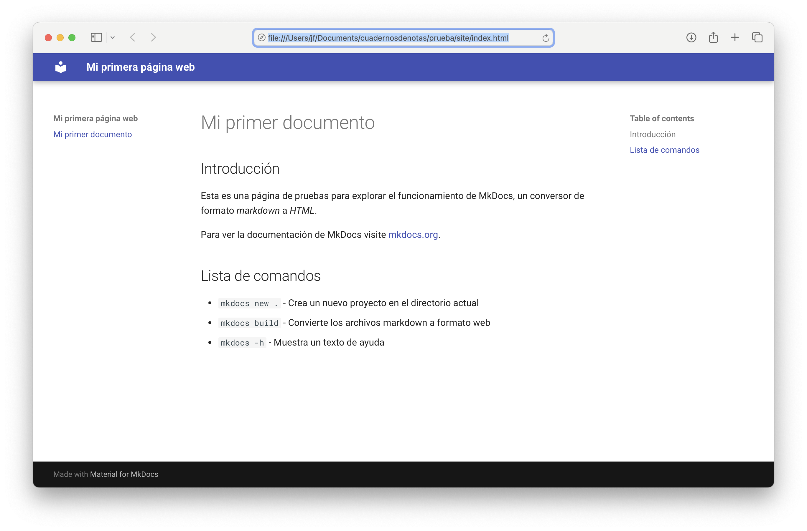

Creando un cuaderno¶
Una vez que tenemos el editor de texto y Material for MkDocs instalados, podemos empezar a crear nuestro futuro sitio web de documentación. Cada cuaderno será un proyecto aparte, y cada capítulo del cuaderno, un archivo de texto.
Primeros pasos¶
El primer paso de todo proyecto es crear un directorio para alojar los archivos de trabajo. Abrimos el terminal de comandos del sistema operativo (en mi caso Linux / Mac) y nos situamos en ese nuevo directorio:
$ cd miProyecto
Vamos a crear una estructura básica de proyecto. Comprobamos que tenemos MkDocs:
$ mkdocs --version
Ejecutamos el comando:
$ mkdocs new .
lo que indica a MkDocs que cree un nuevo proyecto en el directorio actual, representado por un punto al final del comando. Esto crea la siguiente estructura de carpetas y archivos:
.
├─ docs/
│ └─ index.md
└─ mkdocs.yml
Siendo:
-
El archivo
mkdocs.ymles un archivo de texto con la configuración del proyecto. Debe estar siempre presente en su directorio.Los archivos
.ymlson textos que siguen el formato YAML (no son archivos markdown). Podemos ver las especificaciones en https://yaml.org -
La carpeta
docscontiene los documentos en formato markdown, siendo archivos de texto con sufijo.md. En principio tendremos un único documento, que típicamente se llamaráindex.md. A medida que queramos añadir capítulos a nuestro cuaderno, crearemos nuevos archivos.mden esta carpetadocs.
MkDocs convertirá todos los archivos markdown que encuentre en la carpeta docs y sus subcarpetas. Considerará como archivos markdown aquellos de texto que tengan un nombre con sufijo ".md", ".markdown", ".mdown", ".mkdn", ".mkd" o ".md"
El formato Yaml¶
La configuración del proyecto se guarda en mkdocs.yml. En líneas generales, contiene una colección de parejas clave:valor, cada una de ellas en línea aparte. Se admiten líneas en blanco, que serán puramente decorativas:
site_name: Mi proyecto de documentacion
site_url: https://midominio.org/miproyecto
docs_dir: docs
En este ejemplo, especificamos el nombre del proyecto, la URL de nuestro futuro sitio web, y la carpeta de documentos, que por defecto, si no indicamos nada, será "docs". La configuración del proyecto se puede ajustar introduciendo los parámetros necesarios en el archivo mkdocs.yml.
Cada variable puede ser de diferente tipo, que será deducido automáticamente. Por ejemplo:
-
un texto. Las comillas son opcionales, y pueden usarse apóstrofos en su lugar:
nombre: "Luis Gutierrez" -
un número:
edad: 58 -
un valor true o false
activado: true -
una lista. Los elementos se escriben en líneas aparte, precedidos por un guión
participes: - Luis - Ana - Juan -
una colección de elementos clave:valor
opciones: idioma: es avisos: true
Los valores de una colección pueden ser a su vez otras colecciones:
opciones:
idioma:
- es
- fr
- en
avisos: true
El carácter # da inicio a lo que será considerado como comentarios e ignorado. Se toma como tal todo el texto desde # hasta el fin de línea.
#-------------------------
# opciones del proceso
#-------------------------
opciones:
idioma: es
avisos: true
Las líneas en blanco son puramente decorativas.
¡Importante!: los elementos de una lista o de cualquier colección de parejas clave/valor han de ir sangrados. Para la sangría hemos de utilizar espacios, quedando prohibidos los caracteres de tabulación.
Editando los archivos iniciales¶
Tras crear la estructura básica del proyecto, tenemos un archivo index.md con un texto de pruebas, y un archivo mkdocs.yml con la configuración del proyecto.
Vamos a abrir con nuestro editor de textos el primero de esos dos archivos:
# Welcome to MkDocs
For full documentation visit [mkdocs.org](https://www.mkdocs.org).
## Commands
* `mkdocs new [dir-name]` - Create a new project.
* `mkdocs serve` - Start the live-reloading docs server.
* `mkdocs build` - Build the documentation site.
* `mkdocs -h` - Print help message and exit.
## Project layout
mkdocs.yml # The configuration file.
docs/
index.md # The documentation homepage.
... # Other markdown pages, images and other files.
Vamos a borrar el contenido de index.md y sustituirlo por uno propio:
# Mi primer documento
## Introducción
Esta es una página de pruebas para explorar el funcionamiento de MkDocs,
un conversor de formato *markdown* a *HTML*.
Para ver la documentación de MkDocs visite [mkdocs.org](https://www.mkdocs.org).
## Lista de comandos
* `mkdocs new .` - Crea un nuevo proyecto en el directorio actual
* `mkdocs build` - Convierte los archivos markdown a formato web
* `mkdocs -h` - Muestra un texto de ayuda
También vamos a modificar el archivo de configuración mkdocs.yml:
site_name: Mi primera página web
Convertir a HTML¶
Vamos a generar un sitio web con el contenido que tenemos por ahora. El resultado final consistirá en uno o varios archivos de texto en formato HTML, que subiremos al servidor donde se va a alojar nuestro sitio.
Abrimos el terminal de comandos y nos situamos en la carpeta principal del proyecto, allí donde se encuentra el archivo mkdocs.yml:
$ cd miproyecto
Ejecutamos el comando:
$ mkdocs build
Si obtenemos un mensaje de error:
Error: Config file 'mkdocs.yml' does not exist.
significa que nos hemos situado en la carpeta equivocada. Típicamente, el directorio de trabajo se suele mostrar a la izquierda del prompt. Revisarlo y repetir el comando cd.
Dependiendo de nuestro sistema operativo y la instalación, es posible que, en el terminal de comandos, la palabra mkdocs no sea reconocida como comando. MkDocs es un módulo desarrollado en Python, por lo que también se puede ejecutar con:
$ python3 -m mkdocs build
Es decir, ejecutamos el intérprete de Python pasándole un módulo a ejecutar (opción -m) llamado mkdocs.
Si finalmente todo va bien, se generan los archivos HTML en una nueva carpeta site, dentro de la carpeta de proyecto. El contenido de esta carpeta es lo que vamos a subir al servidor, pero por ahora podemos examinarlo en nuestra computadora. El documento principal es index.html. Haciendo doble clic sobre el mismo, se visualizará en la ventana del navegador web:

Los colores, tipo de letra, presentación, etc. los añade automáticamente MkDocs. Véase que el índice que hay a la izquierda se construye a partir de los párrafos de encabezado de sección, que en formato markdown se marcan con símbolos #.
Formato markdown¶
Una vez visto el aspecto que tiene nuestra página web de pruebas, vamos a examinar su aspecto en formato markdown. Abrimos con un editor de textos el archivo docs/index.md:
- los párrafos se separan con una línea en blanco
-
los párrafos de título de página van precedidos por un carácter
#, que desaparecerá al convertir a html:# Mi primer documento -
el texto de la página se puede dividir en varios apartados, cada uno de ellos con un párrafo de título. Estos encabezados van precedidos por dos o más caracteres
### Lista de comandos -
los enlaces se indican en formato
[texto a mostrar](URL) -
las entradas de una lista van precedidas por un guión o un asterisco
-
El texto entre acentos invertidos (`) se muestra en un tipo de letra especial
El parámetro site_name en el archivo de configuración mkdocs.yml establece el texto a mostrar en la barra de cabecera de la página web.
Tema¶
MkDocs genera las páginas web con una presentación por defecto, pero permite utilizar otros formatos. Al conjunto de reglas de presentación se le denomina "Tema". Podemos cambiarlo en el archivo de configuración mkdocs.yml.
MkDocs se suministra con dos temas, el que se utiliza por defecto y otro llamado readthedocs. Este se activa con:
site_name: Mi primera página web
site_url: https://midominio.org/miproyecto
theme:
name: readthedocs
La entrada site_url por ahora no es necesaria, pero lo será cuando subamos el proyecto al servidor. El apartado theme establece la configuración de las opciones de presentación.
Para establecer el tema por defecto de forma explícita, escribimos:
theme:
name: mkdocs
El software Material for MkDocs que hemos instalado extiende las capacidades originales de MkDocs. Utiliza un tema propio:
site_name: Mi primera página web
site_url: https://midominio.org/miproyecto
theme:
name: material
Para ver el efecto del nuevo tema aplicado, repetimos la conversión a html con el comando:
$ mkdocs build
Y ahora, el archivo index.html tiene el aspecto proporcionado por Material:

En el panel izquierdo vemos un índice de páginas (por ahora solo tenemos una). Por defecto, cada entrada de la lista se construye a partir del párrafo de título principal.
En el panel derecho tenemos un índice de apartados dentro del texto del documento.
Carpetas¶
Las carpetas por defecto son docs, para los documentos markdown, y site para el sitio web generado. Podemos establecer otros nombres en el archivo mkdocs.yml:
site_name: Mi proyecto de documentacion
site_url: https://midominio.org/miproyecto
theme:
name: material
docs_dir: docs
site_dir: site
Las carpetas se especifican asumiendo que "cuelgan" del directorio raíz de proyecto. Por ejemplo, si queremos guardar los archivos markdown en una subcarpeta:
docs_dir: docs/ficheros_markdown
Añadir más páginas¶
Inicialmente, nuestro proyecto se crea con un único documento, docs/index.md, que se convertirá en site/index.html. Para añadir más páginas, basta con crear nuevos archivos markdown en la carpeta docs.
MkDocs generará automáticamente tantos archivos HTML como ficheros markdown encuentre. Pero para incluirlos en el índice del panel de navegación izquierdo, tenemos que crear una lista de navegación en el archivo mkdocs.yml:
site_name: Mi proyecto de documentacion
site_url: https://midominio.org/miproyecto
theme:
name: material
docs_dir: docs
site_dir: site
nav:
- Inicio: index.md
- Capítulo 1: capitulo1.md
- Capítulo 2: capitulo2.md
- Capítulo 3: capitulo3.md
Cada entrada de la lista está formada por una pareja Texto a mostrar: nombre de archivo.
En la lista solo pondremos los archivos a incluir en el índice. Aquellos que no mencionemos serán convertidos a HTML, pero no se visualizarán en el índice. Para acceder a ellos, necesitamos poner algún enlace en el texto de otra página:
Véase [referencia](nombrearchivo.md) para más información
Recuérdese que los enlaces se especifican en formato [texto](URL). En este caso, la URL a enlazar es el nombre del archivo.
Previsualización¶
Sin llegar a crear el sitio web, podemos hacer una conversión "al vuelo" y visualizar los resultados en la ventana del navegador web. Para ello, tenemos que poner en marcha MkDocs en modo "servidor".
Nos situamos en la carpeta principal del proyecto:
$ cd miproyecto
y ejecutamos:
$ mkdocs serve
Esto muestra algunos mensajes del proceso de conversión, y si todo va bien, indica que la página web resultante será visible en una dirección web:
INFO - Building documentation...
INFO - Cleaning site directory
INFO - Documentation built in 0.41 seconds
INFO - [10:28:25] Watching paths for changes: 'docs', 'mkdocs.yml'
INFO - [10:28:25] Serving on
http://127.0.0.1:8000/miproyecto/
El servidor se mantiene activo en segundo plano, y cada vez que guardemos los cambios de cualquier archivo, se regenerarán las páginas. Podemos tener abiertas las dos ventanas, el editor y el navegador web, y los cambios en una se reflejarán en la otra. En el navegador, introducir la URL indicada, en este ejemplo, http://127.0.0.1:8000/miproyecto/.
El servidor MkDocs se detiene seleccionando la ventana del Terminal de comandos y pulsando Ctrl+C (o la tecla establecida en nuestro sistema operativo para interrumpir la ejecución de comandos).
Anatomía del sitio web¶
El comando que hemos ejecutado:
$ mkdocs build
crea una carpeta /site con todos los archivos que forman nuestro sitio web, y que vamos a subir al servidor. A medida que vayamos desarrollando proyectos más elaborados, el contenido de /site se irá volviendo más complejo.
Veamos un resumen del contenido básico de la carpeta:
-
una lista de archivos
html, uno por cada documento markdown. Serán nuestras futuras páginas web. El archivo principal esindex.html -
una página añadida de forma automática,
404.html. Será lo que se muestre cuando un enlace hace referencia a una página que no existe -
una carpeta
/assets/imagescon iconos y contenidos gráficos -
una carpeta
/assets/javascriptscon los scripts añadidos por MkDocs, proporcionando diferentes funcionalidades a nuestro sitio web -
una carpeta
/assets/stylesheetscon hojas de estilo y formatos de presentación -
una carpeta
/searchcon los elementos que utiliza la función de búsqueda disponible en la barra superior de cada página.